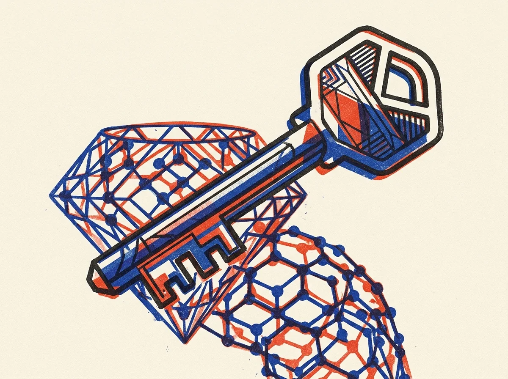
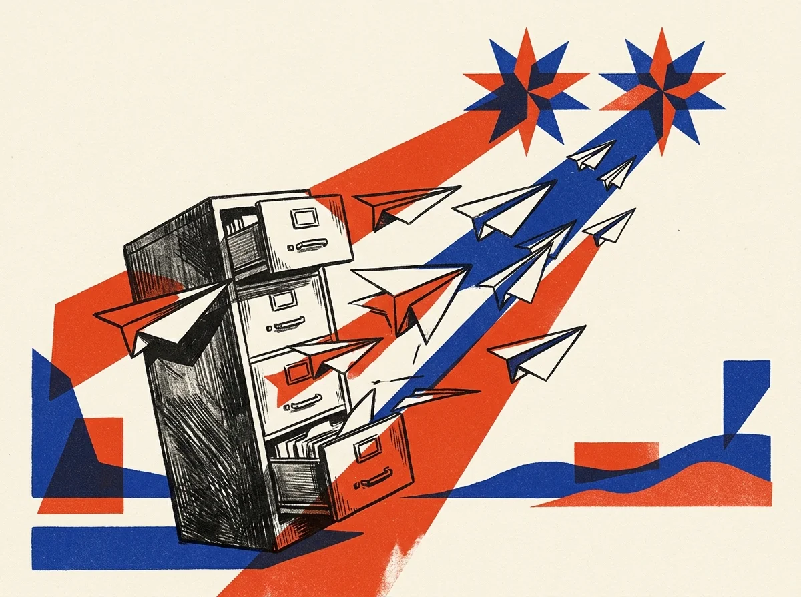

Skip to main content
GeminiPulse · Plain-English Gemini News & Live Labs
0 Peeks · 0 Briefs · 0 Clicks
PRESS T TO FLIP TWINS
Cover Dispatch
· Oct 30, 2026

Google’s Computer Use tool reaches general availability with built-in action intent logs and screenshot prompt-injection defense.
Plain-English Dossiers
100% Grounded in Primary Google Sources

Frontier Report
Our three-part plain-English breakdown translates Google’s flagship release into concrete security workflows and 95% cache savings.

Migration Playbook
Follow our two-part Rosetta Stone guide from fragile PHP plugins and phpMyAdmin to Firebase and Antigravity.
The Signal Index
-
Computer Use
-
Cyberdefense
-
Migration
-
(T)winning
-
SDK v2.32
β Pollux · Hands-On
Try prompt-injection defense in three seconds, judge four single-shot frontier apps, or calculate 95% cache savings.
Plug-In Cartridges & Originals
HOVER HEADLINES OR CLICK SPECS
TAP SPECS FOR FULL DETAILS
01 · Originals
Rotate Castor and Pollux in pure HTML5 Canvas, or judge single-shot builds in our Arena.
02 · Showcase
Browse verified community products, official Google references, and sixty-second YouTube Shorts breakdowns.
03 · (T)winning
Start free forever with our starter plugin, or unlock fifty business prompts without monthly subscriptions.
✦ Across the Seam · α Castor
Want the Plain-English Journalism Behind Today’s Releases?
Switch to your editorial twin for search-grounded dispatches on Computer Use, Carbon cyberdefense, and leaving WordPress.
α Castor · ReadEditorial Twin
- Surface: Warm cotton paper (or Late Ink night paper) with optical serif type & Risograph art.
- Focus: Plain-English news, 3-part dossiers, and the 1-line Signal Index.
β Pollux · BuildKinetic Twin
- Surface: Tactile putty & 2px ink poster frames with halftone vector hardware art.
- Focus: Live 3-second simulator, Twin-Star Arcade, Showcase & $0–$29 Add-Ons.
GA SpecOct 30, 2026
- Controls
browser, desktop, and mobile UIs via Interactions API.
- Emits step-by-step
intent logs + screenshot prompt-injection scanning.
- Pair
gemini-3.8-flash ($0.75/1M) with gemini-4-argon.
SDK ReleaseOct 29, 2026
@google/genai v2.32 (JS/TS) & google-genai v2.34 (Python).- Native
automatic_continuation on client.interactions.create().
DeepMindGenie 4
- Generates interactive 3D worlds, physics, and native audio on the fly.
- Steerable live via text prompts, keyboard, and voice.
Agent Workhorse$0.75 / 1M
gemini-3.8-flash & 3.8-flash-cyber with 1M context window.- Tunable reasoning budgets built for high-frequency UI & CI loops.
Flagship#1 Frontier
- #1 on Artificial Analysis v5.0 & SEC-bench Pro (88.2%).
- 95% cached input discount ($2.00/1M → $0.10/1M).
2-Part Series$0/mo Stack
- Part 1: WordPress & FTP → Antigravity + Firebase Hosting.
- Part 2: MySQL/phpMyAdmin → Cloud Firestore + SQL translator demo.
Originals60fps + Arena
- Arcade: Twin Stars of Gemini pure HTML5 Canvas + Web Audio game.
- Arena: 4 single-shot Gemini 4 Argon apps + Stack ROI calculator.
ShowcaseVerified Directory
- Curated: NotebookLM, Gemini CLI, Outdraw AI, Jayu & Prospera.
- Media: 9:16 YouTube Shorts player & Google-authenticated submissions.
4-Rung Value Ladder$0 – $29
- $0 Free: Open-source
gemini-twin-starter Antigravity plugin.
- $19–$29 Prepaid: Workspace 50-Vault, WP Migrator, or Shorts Kit.
- $9/mo Insider: All-Access Pass ($116+ standalone value).